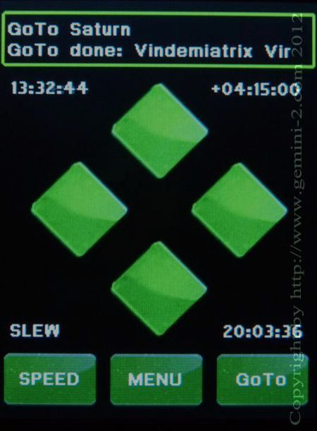
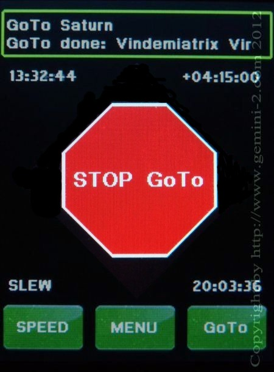

| Interactive Hand-Controller Menus - click on green button to Navigate |
|
 Menu for Versions before L5.1 dated 20 Oct 2012. |
 For Versions L5.1 dated 20 Oct 2012 and after. |
|
The top line shows that you are slewing to Saturn. To see what the menu
looks like when Saturn is reached click on any of the green diamond
buttons, or Click on the Stop button, or wait 10 seconds. |